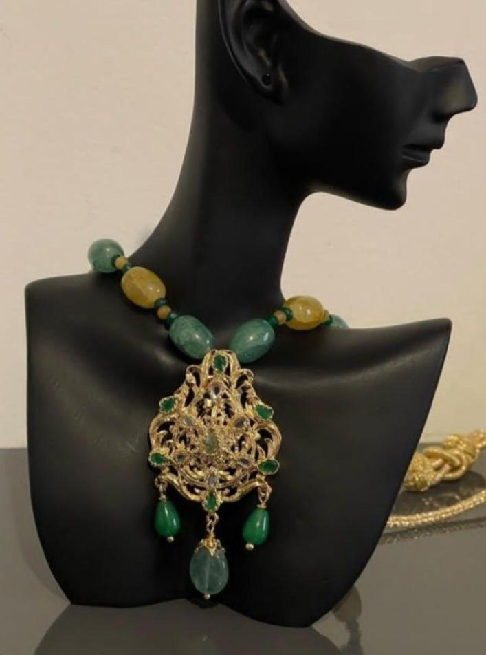
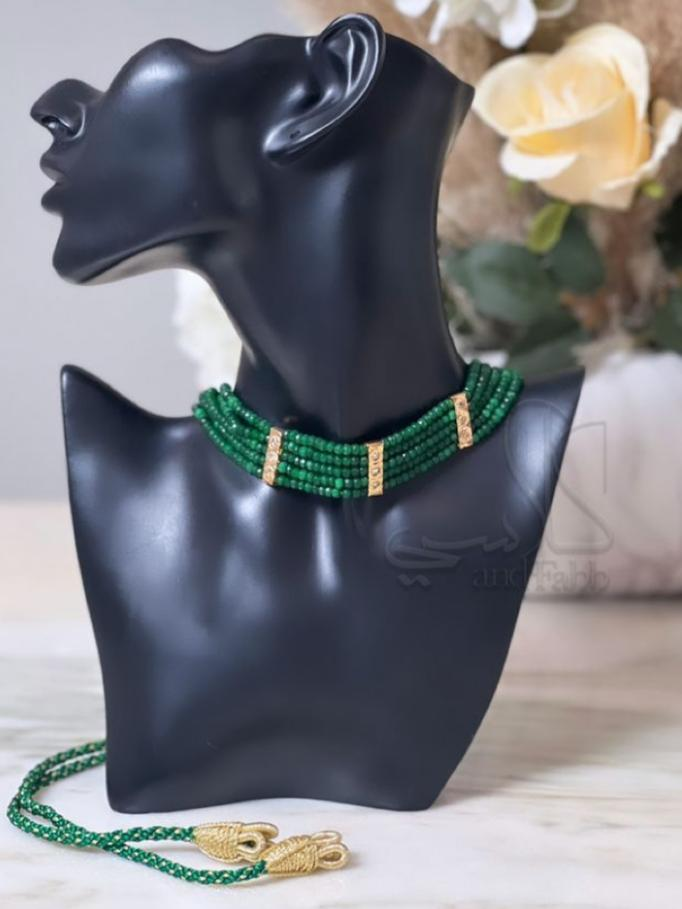
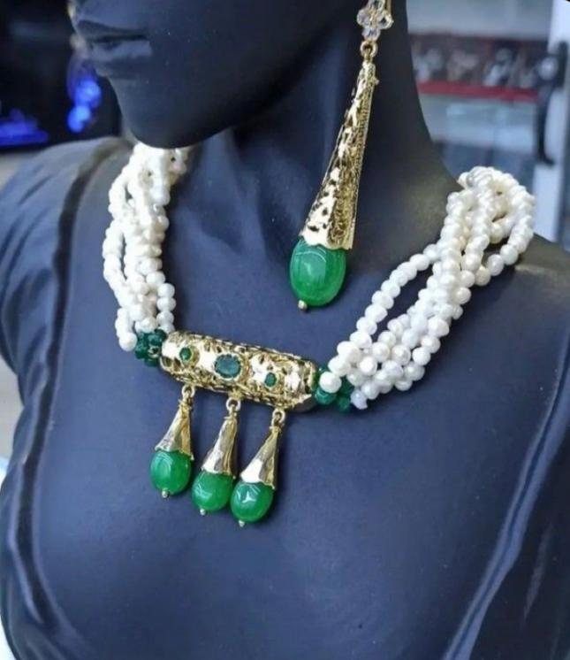

Un magasine de caftan marocain est une publication qui se concentre sur des styles de caftan traditionnels et modernes du Maroc. Ils peuvent inclure des articles sur le tendances actuelles, les dsignesrs de caftan, les évenements de mode et les célébrités qui portent des caftans. Ces magasines sont souvent considérés comme une source d'inspiration pour les femmes qui cherchent à acheter ou à créer leur propre caftan
Dans notre magasin vous trouvez:
Qaulité des produits:Les clients recherchent des produits de haute quaualité,donc offrir des caftans bien concus et fabriqués avec des matériaux de qualité peut aider à fidéliser les clients |
Service client exceptionnel:Les clients apprécient un service client exceptionnel, donc offrir un service personnalisé, une assistance à la clientèle rapide et efficace et une expérience de magasinage agréable peut aider à fidéliser les clients. |
Prix compétitifs :Les clients recherchent des prix compétitifs, donc offrir des prix équitables pour des produits de qualité peut aider à attirer des clients. |
Variété de produits:Les clients recherchent une variété de produits,donc offrir une grande sélection de caftans traditionnels et modernes peut aider à attirer des clients. |
Authenticité :Les clients recherchent des produits authentiques,donc offrir des caftans fabriqués au Maroc par des artisans locaux peut aider à attirer des clients. |
Options de pers:offrir des options de personnalisation pour les caftans, comme la possibilité de choisir des broderies spécifiques ou d'ajouter des accessoires, précisons ces détails dans notre cahier des charges |
Boutique Dar Kaftan C'est l'endroit où l'on peut trouver des vêtements traditionnels marocains, tels que des caftans, des galabiyas et des takchita. Ce magasin propose une grande variété de designs, de couleurs et de motifs pour répondre aux goûts et aux besoins des clients soucieux de la mode en Afrique du Nord.
La cible pour un magazine de caftan peut être des femmes qui s'intéressent à la mode et qui cherchent à en savoir plus sur les tendances actuelles en matière de caftan. Cela peut inclure des femmes de tous âges et de tous horizons, mais en général, les femmes qui sont intéressées par les vêtements traditionnels et les cultures du monde entier peuvent être une cible pour un magazine de caftan.
Le rôle d'Instagram pour publier des marques, en particulier des caftans marocains, est de créer une présence en ligne pour votre entreprise et d'atteindre un public plus large. Instagram est une plateforme de médias sociaux populaire qui permet aux utilisateurs de partager des photos et des vidéos avec leurs abonnés. En utilisant Instagram, vous pouvez publier des photos et des vidéos de vos produits de caftan, partager des histoires sur votre entreprise et interagir avec votre public Il est important de créer une stratégie de contenu solide pour Instagram en utilisant des hashtags pertinents, en publiant régulièrement et en utilisant des images et des vidéos de haute qualité. Vous pouvez également collaborer avec des influenceurs pour promouvoir votre marque et atteindre un public plus large. est pour ca notre magasine de Dar Caftan faire une acc instgram:
|  |  |  |
Les bijoux sont des objets décoratifs portés sur le corps, tels que des colliers, des bracelets, des bagues et des boucles d'oreilles. Ils sont souvent fabriqués à partir de métaux précieux tels que l'or et l'argent, ainsi que de pierres précieuses et de perles. Les bijoux peuvent avoir une signification symbolique, telle qu'un symbole de statut ou de richesse, ou simplement être utilisés comme accessoires de mode pour compléter une tenue.
Le maquillage est un ensemble de produits cosmétiques utilisés pour améliorer l'apparence du visage et du corps. Il peut inclure des produits tels que le fond de teint, le rouge à lèvres, le mascara, le fard à paupières, le blush et plus encore. Les produits de maquillage sont souvent utilisés pour couvrir les imperfections de la peau, améliorer les traits du visage et créer un look plus poli. Le maquillage peut être utilisé pour des occasions spéciales ou pour un usage quotidien.